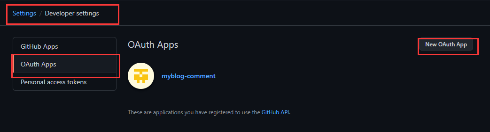
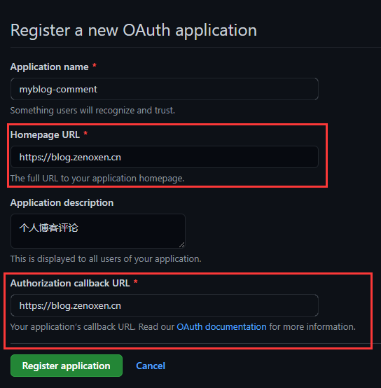
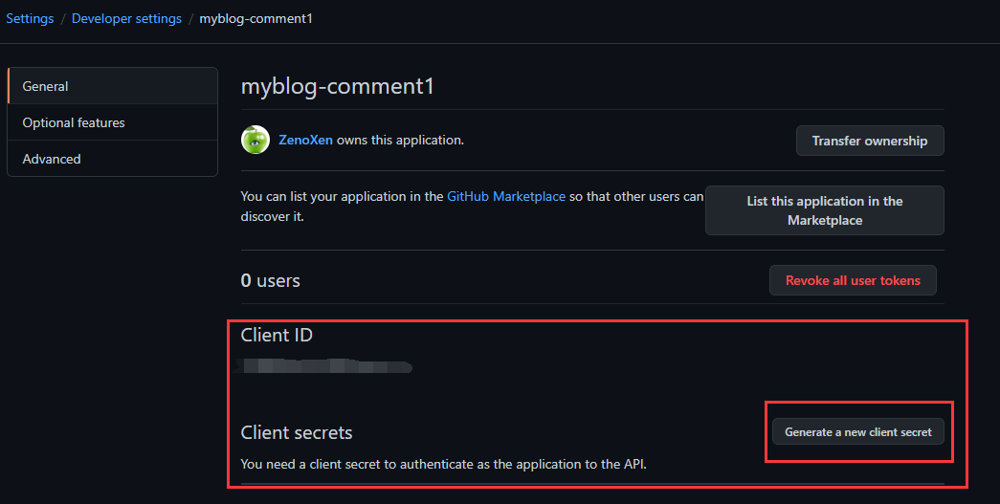
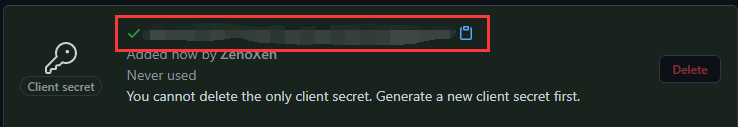
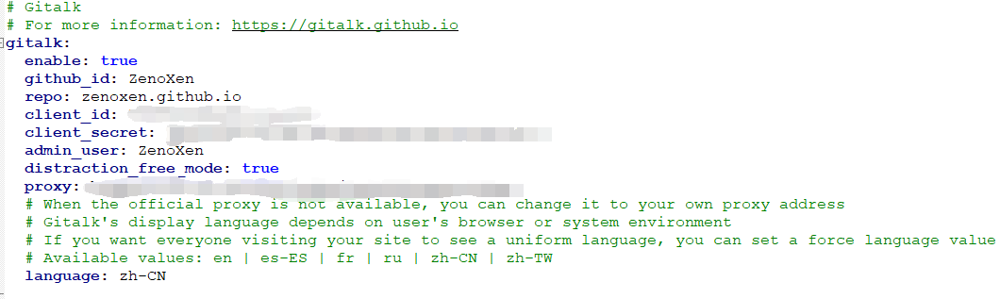
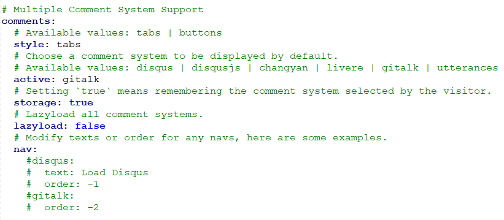
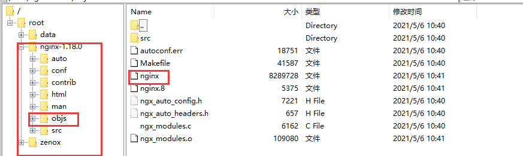
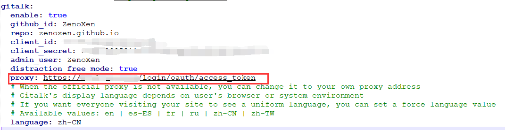

hexo-next主题整合Gitalk评论系统
阅读须知
由于Gitalk的配置中存在一个proxy属性，并且默认配置中的proxy已经过时无法用了，必须要我们自己手动搭建一个反向代理服务，所以需要在你继续往下阅读之前，需要有一台可支配的nginx服务器。
安装Gitalk
虽然next主题内已经包含了gitalk的相关配置，但默认是不启用的，即使我们去启用，也会报错。需要先给hexo项目安装gitalk的依赖。
1 | npm install --save gitalk |
创建github oauth app
登录github->settings->developer settings->new oauth app

此处需要你注册一个新的oauth application。

这里几个字段含义如下
- Application name: oauth app的名称，随意取
- Homepage URL: 这个填你的博客首页，如果有域名的话，填你的博客域名，或者用你的github.io地址也可以
- Application description: app的描述，随便填
- Authorization callback URL: 同Homepage URL，汝过有域名，填写域名，若没有，填github.io也可以
创建成功后，直接就会进入这个oauth app的概览页面，如下所示，这里我们需要取两个非常重要的信息，Client ID和Client secrets

Client secrets默认是不显示的，点击Generate a new client secret后，它才会出现，记得将这一串信息记录下来，否则下次它就不显示了。

修改hexo与next配置
最新的hexo以及next主题都已经支持自动整合gitalk评论组件，我们需要做的只是一些必要的配置。
配置gitalk
进入next主题配置文件，找到gitalk相关配置项。

这边几个字段含义如下。
- enabled: 是否启用，填true即可
- github_id: 你的github名
- repo: github仓库名，实际上随便建一个public的仓库就好（必须得是public不能是private），也可以像我一样直接用github.io仓库
- client_id: 填写你刚注册的oauth app的clientId
- client_secret: 填写你刚注册的oauth app的clientSecret
- admin_user: 填写你自己的github名即可
- distraction_free_mode: 是否开启无干扰模式，即你在输入评论文字时，页面的其他部分是否可用
- proxy: 代理地址，后面会单独讲
- language: 填写中文即可，即zh-CN
打开评论功能
光配置gitalk还不够，需要将当前启用的评论系统切换为gitalk才可以，因为hexo支持多款评论插件，需要我们自己进行选择。
在next主题配置文件中找到comment配置项。

主要将active填些gitalk即可。
搭建自己的proxy
按照上述配置，如果你启动的话，会发现通过gitalk登录github时出现network error或者403错误。
这是因为gitalk的默认配置proxy已经无法使用了，默认配置中的https://cors-anywhere.herokuapp.com是heroku平台的一个demo网站，目前已经不可用了，所以我们必须自己搭建一个反向代理服务，去替换这里的proxy配置。
这边主要有几个步骤。
- 开启nginx的ssl支持
- 使用openssl生成ssl证书
- 配置nginx，添加反向代理
开启nginx的ssl支持
由于gitalk在调用oauth app时会使用proxy地址去登录，而你的博客如果是https前缀的，那么proxy地址也需要是https前缀的。
一般情况下，安装nginx时是不会自带ssl模块的，也就是说nginx默认不支持ssl，需要在安装时指定ssl模块。你可以通过下列命令来查看已安装的nginx是否带ssl模块，注意-V大写。
1 | ./nginx -V |
如果你已经安装了nginx但没有ssl模块，可以参考下面步骤来添加一个ssl模块。
进入nginx解压包目录，指定一个–with-http_ssl_module如下所示。随后使用make命令编译，但不要使用make install命令，因为这样做会导致现有的nginx配置被完全覆盖。
1 | ./configure --prefix=/usr/local/nginx --with-http_stub_status_module --with-http_ssl_module |
make执行完后，你应该能在nginx解压包目录内看到编译后的可执行nginx文件。

用它覆盖你现有nginx的安装目录下，比如我的安装目录是/usr/local/nginx/sbin。
此时再使用./nginx -V查看，应该可以发现已经附带了ssl模块。
使用openssl生成ssl证书
要给nginx启用https前缀，需要先拥有我们自己的ssl证书，openssl是可以免费生成的，或者你也可以用阿里云、腾讯云的免费ssl证书。
建议新建一个目录用于存放生成的各种密钥、证书。
在继续往下阅读之前，你需要先确保自己系统上安装了openssl这个工具。
首先使用下面的命令生成CA私钥。
1 | openssl genrsa -out local.key 2048 |
使用下面的命令生成CA证书请求csr文件，在这个过程中，会让你输入一些诸如国家、省份、城市、部门之类的信息，但最重要的是密码，把它记下来。
1 | openssl req -new -key local.key -out local.csr |
使用下列命令生成CA根证书。
1 | openssl x509 -req -in local.csr -extensions v3_ca -signkey local.key -out local.crt |
使用下列命令生成server私钥。
1 | openssl genrsa -out my_server.key 2048 |
分别使用下列命令生成server证书请求和server证书。
1 | openssl req -new -key my_server.key -out my_server.csr |
1 | openssl x509 -days 365 -req -in my_server.csr -extensions v3_req -CAkey local.key -CA local.crt -CAcreateserial -out my_server.crt |
配置nginx添加反向代理
修改你的nginx安装目录下的，conf/nginx.conf，在server块添加下面的配置。
注意ssl_certificate和ssl_certificate_key是你刚生成出来的的证书和私钥。
1 | listen 443 ssl; |
添加一个location块，如下所示，有两个地方是需要修改的，即add_header Access-Control-Allow-Origin这边，填写你自己的域名或者github.io地址；proxy_pass则填写https://github.com
1 | location = /login/oauth/access_token { |
测试
接下来测试是否能使用https访问到你的nginx，在nginx地址前面加上https前缀来测试，如果能看到nginx欢迎页那么就可以进行下一步了。
替换proxy配置项
回到next主题配置文件里，修改那个proxy配置项，如下所示。

如此一来，你的博客应该就可以使用gitalk了。